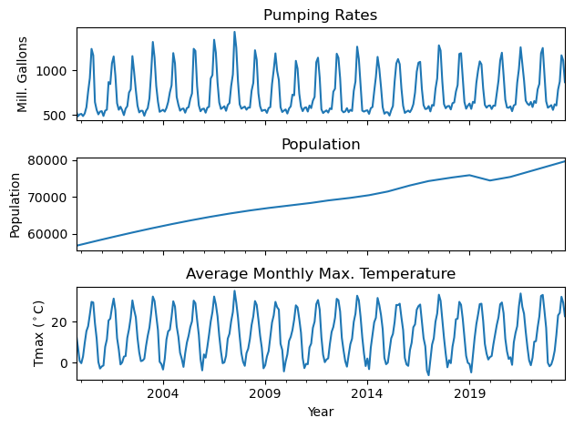
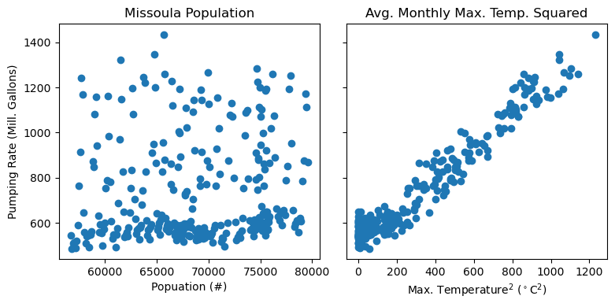
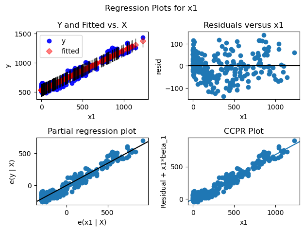
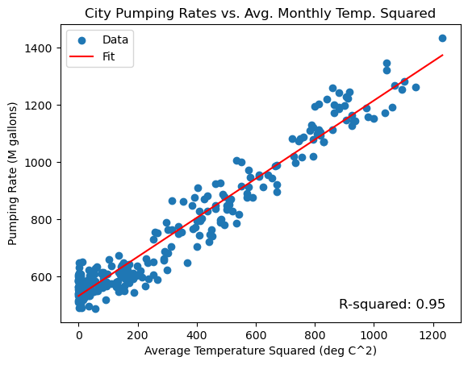

import pandas as pd
import numpy as np
from meteostat import Point, Monthly
from datetime import datetime
import statsmodels.api as sm
import matplotlib.pyplot as pltOLS model
# Download temperature data for Missoula
start = datetime(1999, 10, 1)
end = datetime(2023, 9, 30)
mso = Point(46.86890938888096, -113.99148295276562, 1100)
data = Monthly(mso, start, end)
df_temp = data.fetch()['tmax']
df_temp.to_csv('../data/mso_avg_monthly_tmax.csv')
# Bring in population data and resample to monthly
df_pop = pd.read_csv('../data/mso_pop_year_full.csv', index_col=0)
df_pop.index = pd.to_datetime(df_pop.index, format="%Y")
df_pop = df_pop['population'].resample('MS').mean().interpolate()[start:end]
# Bring City pumping rates
df_dem = pd.read_csv('../data/mso_monthly_pumping_rates.csv')
df_dem['yrmo'] = pd.to_datetime(df_dem['yrmo'], format="%b %Y")
df_dem.set_index('yrmo', inplace=True)
df_dem = df_dem['vol_Mg'][start:end]UserWarning: Could not infer format, so each element will be parsed individually, falling back to `dateutil`. To ensure parsing is consistent and as-expected, please specify a format.fig, ax = plt.subplots(3, 1, sharex=True)
df_dem.plot(ax=ax[0])
df_pop.plot(ax=ax[1])
df_temp.plot(ax=ax[2])
ax[0].set_title('Pumping Rates')
ax[0].set_ylabel('Mill. Gallons')
ax[1].set_title('Population')
ax[1].set_ylabel('Population')
ax[2].set_title('Average Monthly Max. Temperature')
ax[2].set_ylabel('Tmax ($^\circ$C)')
plt.xlabel('Year')
plt.tight_layout()
fig, ax = plt.subplots(1, 2, figsize=(8, 4), sharey=True)
ax[0].scatter(df_pop.values, df_dem.values)
ax[0].set_title('Missoula Population')
ax[0].set_xlabel('Popuation (#)')
ax[1].scatter(df_temp.values**2, df_dem.values)
ax[1].set_title('Avg. Monthly Max. Temp. Squared')
ax[1].set_xlabel('Max. Temperature$^2$ ($^\circ$C$^2$)')
ax[0].set_ylabel('Pumping Rate (Mill. Gallons)')
plt.tight_layout()
x = df_temp.values**2
#x = np.column_stack((df_pop.values, df_temp.values**2))
x = sm.add_constant(x)
y = df_dem.valuesmodel = sm.OLS(y, x).fit()
model.summary()| Dep. Variable: | y | R-squared: | 0.948 |
| Model: | OLS | Adj. R-squared: | 0.948 |
| Method: | Least Squares | F-statistic: | 5217. |
| Date: | Wed, 21 Aug 2024 | Prob (F-statistic): | 1.09e-185 |
| Time: | 15:24:22 | Log-Likelihood: | -1548.1 |
| No. Observations: | 288 | AIC: | 3100. |
| Df Residuals: | 286 | BIC: | 3107. |
| Df Model: | 1 | ||
| Covariance Type: | nonrobust |
| coef | std err | t | P>|t| | [0.025 | 0.975] | |
| const | 531.1013 | 4.226 | 125.686 | 0.000 | 522.784 | 539.419 |
| x1 | 0.6838 | 0.009 | 72.231 | 0.000 | 0.665 | 0.702 |
| Omnibus: | 0.605 | Durbin-Watson: | 1.299 |
| Prob(Omnibus): | 0.739 | Jarque-Bera (JB): | 0.710 |
| Skew: | 0.010 | Prob(JB): | 0.701 |
| Kurtosis: | 2.758 | Cond. No. | 610. |
Notes:
[1] Standard Errors assume that the covariance matrix of the errors is correctly specified.
fig = sm.graphics.plot_regress_exog(model, 'x1')
fig.tight_layout()
intercept = model.params[0]
slope = model.params[1]
rsquared = model.rsquared
x_values = np.linspace(min(x[:, 1]), max(x[:, 1]), 100)
y_values = slope * x_values + interceptplt.scatter(x[:, 1], y, label='Data')
plt.plot(x_values, y_values, color='red', label='Fit')
plt.xlabel('Average Temperature Squared (deg C^2)')
plt.ylabel('Pumping Rate (M gallons)')
plt.title('City Pumping Rates vs. Avg. Monthly Temp. Squared')
text_x = max(x[:, 1]) - 350 # X-coordinate for the text
text_y = min(y) # Y-coordinate for the text
plt.text(text_x, text_y, f'R-squared: {rsquared:.2f}', fontsize=12)
plt.legend()
plt.show()